Fem_Wilson非协调单元在PS4的推导
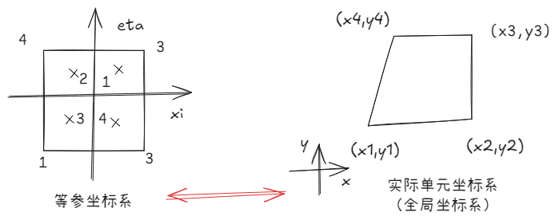
Ps4单元的位移自由度：
节点自由度：ux,uy
单元自由度：$\delta^e=[u1x,u1y,....u4x,u4y]^T$
但是在承受弯曲载荷的时候，存在shear locking的问题。Wilson非协调单元通过在每个坐标方向上增加2个内部自由度，解决该问题：
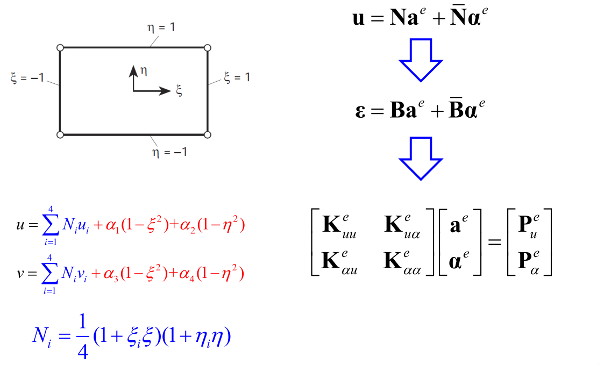
位移插值
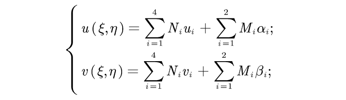
几何插值
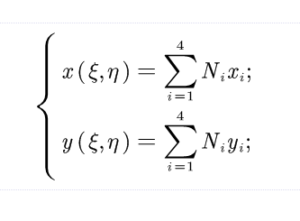
单元形函数
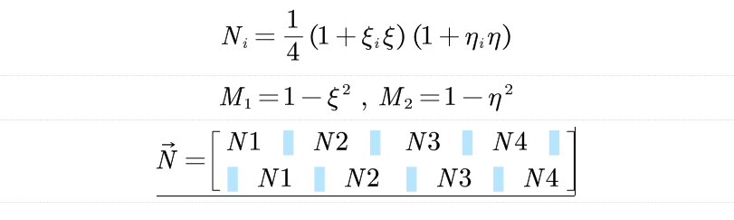
应变-位移关系
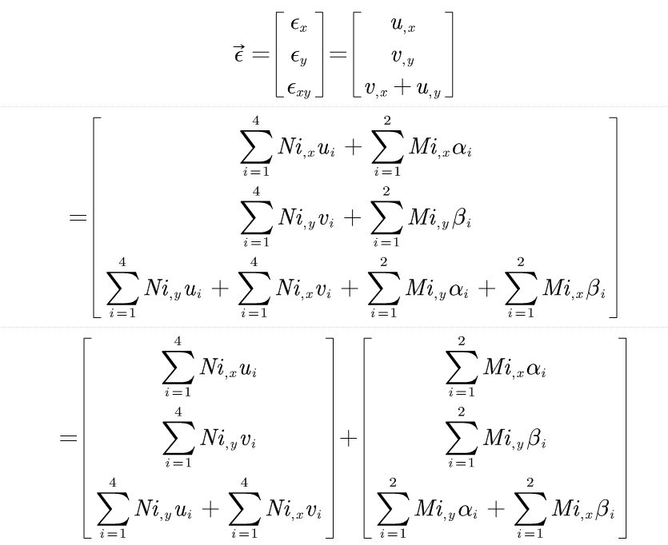
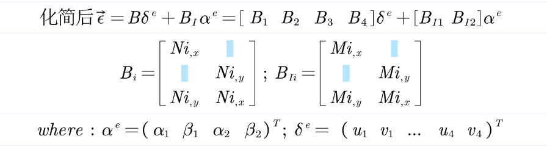
应力-应变关系
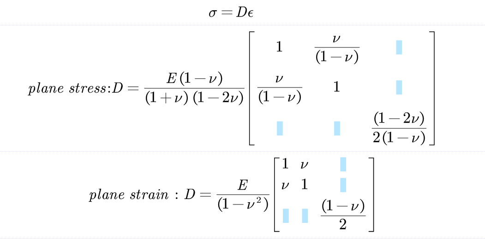
雅可比矩阵计算$J(\xi,\eta)$
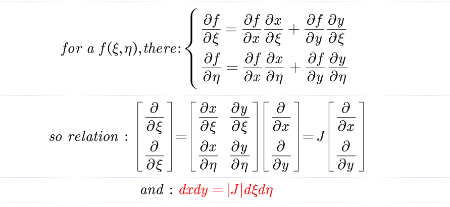
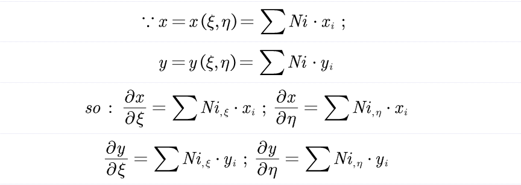
最小势能原理推到单元刚度矩阵
以下是PS4单元的刚度矩阵推导：
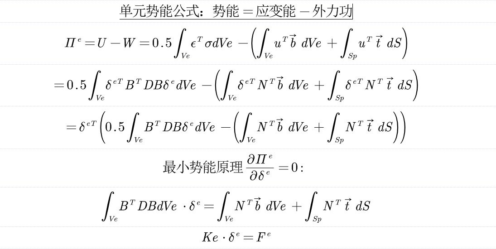
加入wilson内部自由度后，由于内部自由度不会影响外力功，因此只有修改单元刚度矩阵部分：
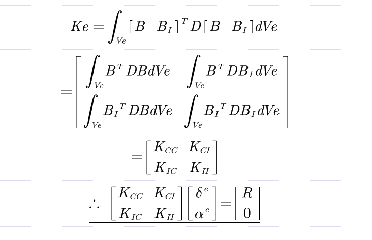
进一步，将内部自由度凝聚：
所以，Wilson非协调单元的刚度矩阵为：
高斯积分计算单元刚度矩阵
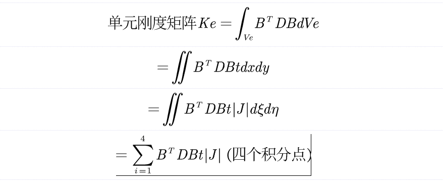
体积力等效为节点力
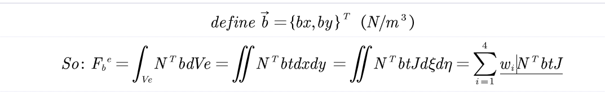
单元质量矩阵
surface stress force 加载等效为节点力
对于一个PS4单元,假设有s条单元边收到单元表面力的作用。所以整个单元的等效节点力$F_{trac}^e$为：
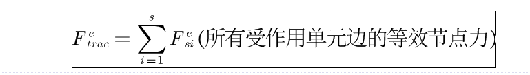
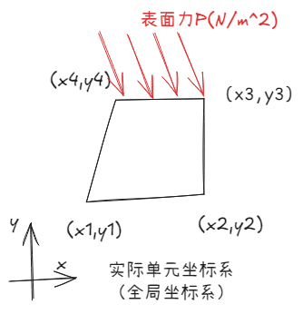
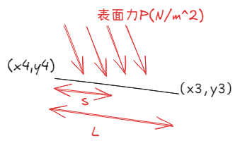
对于局部坐标s有：
以 表面力P作用在3-4 edge为例子：
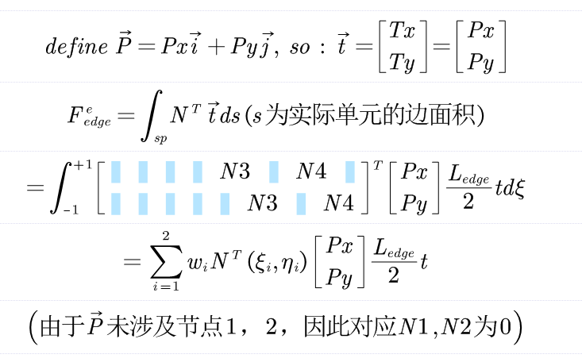